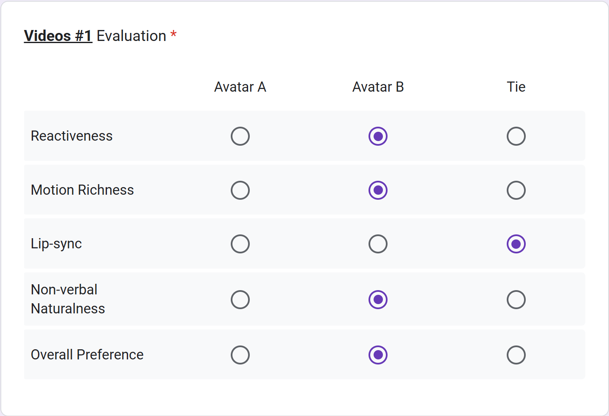
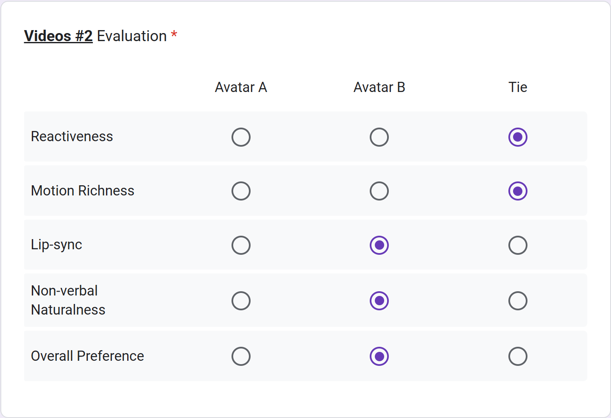

!! Please evaluate following user-interactive human avatar generation !!
For each video set (#1 - #8), you will see one user video (real human input) and two generated videos (Avatar A and B), describing the same conversation scenario. Please watch all videos carefully and choose your preferred video based on the following criteria.
1. Reactiveness
How well the avatar’s motion reflects the input user’s behavior and context.
Evaluate how naturally the avatar responds to the user’s video. For example, keeping eye contact or reacting appropriately (e.g., smiling together).
아바타가 주어진 user 비디오의 동작과 상황을 얼마나 자연스럽게 반영하는지를 평가하세요. 예를 들어, 시선 맞춤이나 함께 웃는 등의 반응이 자연스러운지를 봅니다.
2. Motion Richness
Whether the avatar’s movements are expressive rather than passive or stiff.
Assess the richness and liveliness of expressions and head movements.
아바타의 표정, 머리 움직임이 단조롭거나 경직되지 않고 얼마나 풍부하고 생동감 있게 표현되는지를 평가하세요.
3. Verbal Alignment (Lip Sync Accuracy)
How accurately the mouth movements match the speech audio.
Check whether lip motions are well synchronized with the rhythm, timing, and emotion of the voice.
입 모양이 음성의 리듬, 타이밍, 감정을 얼마나 정확히 반영하는지를 평가하세요.
4. Non-verbal Alignment
How naturally the avatar expresses non-verbal cues such as eye contact, nodding, thinking, hesitating, etc.
Evaluate how human-like and contextually appropriate these non-verbal reactions appear in response to the user’s behavior.
아바타가 시선 맞춤, 고개 끄덕임, 생각 중, 망설임 등 비언어적 신호를 얼마나 자연스럽고 상황에 맞게 표현하는지를 평가하세요.
5. Overall Preference
Your overall impression and preference for the video.
Choose the video that feels most natural, expressive, and engaging—one that best resembles a real human-to-human interaction.
전체적으로 가장 자연스럽고 표현력이 풍부하며, 실제 사람과 대화하는 듯한 몰입감을 주는 영상을 선택하세요.
For a fair comparison, the videos have been randomly shuffled.
Examples for user-interactive human avatar videos
Please carefully watch these two examples for precise evaluation !

Reactiveness:Avatar B 0:21 she laughs after the user laughs
Lip Sync Accuracy:Tie
Motion Richness & Non-verbal Behavior Alignment:Avatar B natural head motion and eyebrow movement.

Reactiveness & Motion Richness:Tie both look natural and expressive
Lip Sync Accuracy:Tie
Non-verbal Alignment:Avatar B 0:25 more natural head motion and eyebrow movement.
We highly recommend watching the videos in !!FULL SCREEN!! for better evaluation.